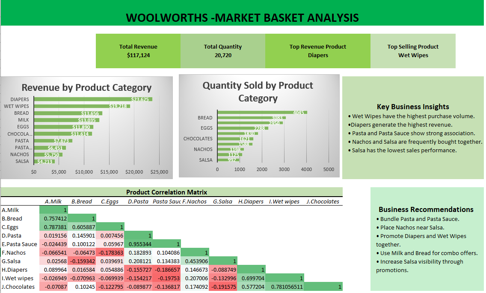

Dashboard

Dashboard Overview – Revenue and Quantity KPIs
Business Objective
The objective of this project was to analyse Woolworths retail transaction data and identify customer purchasing behaviour, product performance, and cross-selling opportunities using Microsoft Excel.
The analysis aimed to transform raw sales data into meaningful business insights that could support product bundling, merchandising, promotional planning, and customer purchasing decisions.
Key Insights
- Wet Wipes recorded the highest purchase volume, with 4,045 units sold, indicating strong recurring customer demand.
- Diapers generated the highest total revenue of $23,625 despite having a lower quantity sold than Wet Wipes, highlighting its higher value per sale.
- Bread and Milk consistently performed well, reflecting strong demand for essential everyday products.
- Salsa recorded the lowest sales quantity and revenue, suggesting that the product may require stronger promotional support and improved visibility.
- Correlation analysis identified complementary buying patterns between selected product combinations, creating opportunities for product bundling and cross-selling.
Business Recommendations
- Bundle Pasta and Pasta Sauce together to encourage complementary purchases and increase average basket value.
- Promote Diapers and Wet Wipes through family-focused campaigns, bundle offers, and coordinated product placement.
- Introduce Milk and Bread combination offers to support repeat purchases of frequently purchased essentials.
- Improve the visibility of Salsa through promotional discounts, improved shelf placement, and bundle offers with Nachos.
- Use high-performing products to support targeted promotions and position lower-performing products alongside popular complementary items.
Outcome
The project transformed raw retail transaction data into an interactive Microsoft Excel dashboard that presented revenue performance, product demand, quantity trends, and customer purchasing relationships.
The final analysis provided actionable recommendations to improve cross-selling strategies, product placement, promotional planning, merchandising decisions, and overall customer basket value.
Key Performance Indicators
Approach
- Reviewed and cleaned the raw Woolworths transaction dataset to improve its structure and prepare it for analysis.
- Organised product, revenue, and quantity information into a structured format suitable for Pivot Table analysis.
- Created Pivot Tables to analyse total revenue and quantity sold across different products.
- Developed Pivot Charts to visually compare product performance and highlight high-performing and low-performing products.
- Performed correlation analysis to identify complementary product relationships and customer purchasing patterns.
- Built an interactive Excel dashboard using KPI cards, Pivot Charts, conditional formatting, and visual summaries.
- Converted the analysis into business insights and practical recommendations for cross-selling, promotional planning, and product placement.